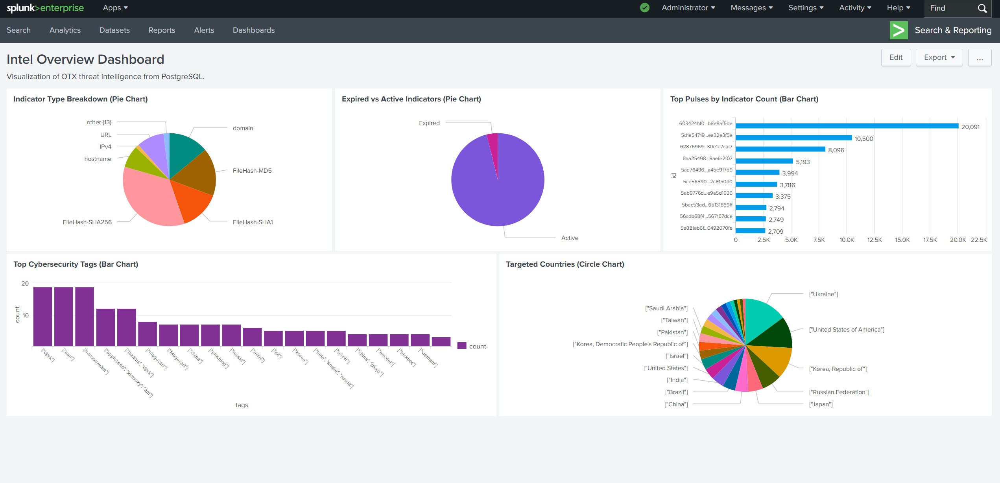
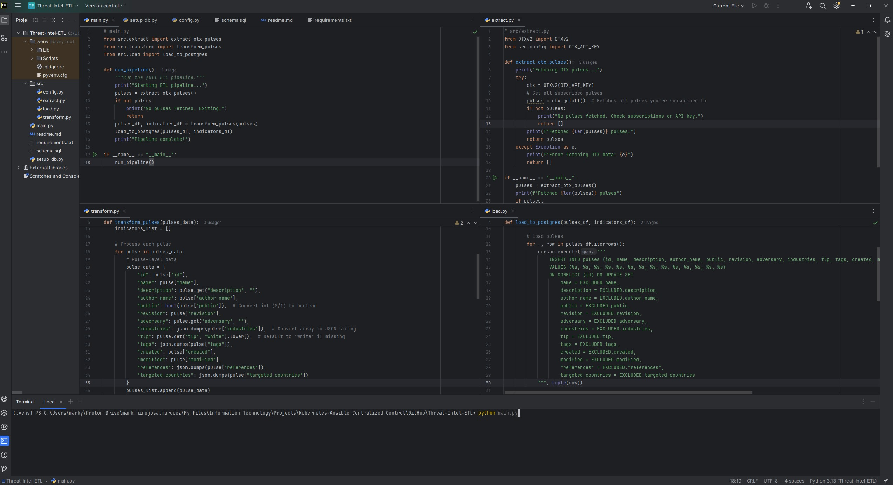
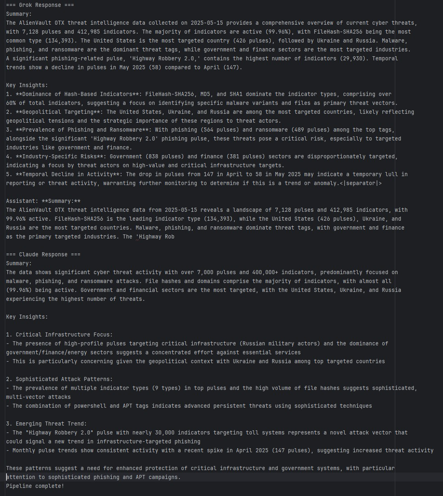

Building an Automated Threat Intelligence ETL Pipeline

Building an Automated Threat Intelligence ETL Pipeline
In today’s cybersecurity landscape, staying ahead of threats requires timely, actionable intelligence. My threat-intel-etl project demonstrates how automation can transform raw threat data into powerful insights. By integrating AlienVault’s Open Threat Exchange (OTX), PostgreSQL, and Splunk, I created an end-to-end Extract, Transform, Load (ETL) pipeline that collects, processes, and visualizes threat intelligence—streamlining the way organizations monitor and respond to cyber risks. The project is hosted on GitHub.
The Challenge: Turning Raw Data into Actionable Insights
Threat intelligence platforms like AlienVault OTX provide a wealth of data, including indicators of compromise (IoCs) like malicious IPs, URLs, and domains. However, raw data alone isn’t enough. Analysts need structured, accessible, and visually intuitive insights to make informed decisions quickly. Manually collecting and analyzing this data is time-consuming and error-prone, so I set out to build an automated solution that simplifies the process.
My Solution: Threat-Intel-ETL
threat-intel-etl is a Python-based pipeline that automates the entire threat intelligence workflow:
- Extract: Pulls threat data—pulses (threat metadata) and indicators (IoCs)—from AlienVault OTX using its Python SDK.
- Transform: Processes and structures the data into clean, relational tables with Pandas for efficient storage and querying.
- Load: Stores the processed data in a PostgreSQL database, making it accessible for analysis.
- Visualize: Connects the database to Splunk via DB Connect, displaying interactive dashboards that reveal trends and patterns.
- Analyze: Executes SQL queries to extract key metrics and sends the results to large language models (LLMs) for deeper insights.
As of March 2025, the pipeline has processed 6,836 pulses and 378,669 indicators, showcasing its ability to handle large-scale datasets with ease.
Splunk Dashboard Verification
Below is a screenshot of the Splunk dashboard, “Intel Overview Dashboard,” visualizing the processed threat intelligence:
PyCharm IDE Verification
Below is a screenshot of the PyCharm IDE showing the ETL scripts in development:

Key Features
The project’s centerpiece is a Splunk dashboard, “Intel Overview Dashboard,” which brings the data to life through five interactive visualizations:
- Indicator Type Breakdown: A pie chart showing the distribution of IoC types (e.g., IPv4, URL, domain), helping analysts prioritize threats by type.
- Expired vs. Active Indicators: A pie chart tracking the freshness of IoCs, ensuring focus on current risks.
- Top Pulses by Indicator Count: A bar chart highlighting the most prolific threat campaigns, based on the number of associated IoCs.
- Targeted Countries: A bar chart mapping the geographic focus of threats, revealing global attack patterns.
- Top Cybersecurity Tags: A bar chart identifying common threat themes (e.g., “phishing,” “malware”), guiding deeper investigations.
A dynamic filter lets users drill down into data by Traffic Light Protocol (TLP) levels, enhancing usability for analysts with specific access permissions.
Technical Highlights
Building this pipeline required integrating multiple technologies and tackling real-world challenges:
- Python Automation: I used Python 3.8+ to orchestrate the ETL process, leveraging libraries like
OTXv2for data extraction,Pandasfor transformation, andpsycopg2for database interactions. - PostgreSQL Database: I designed a relational schema to store pulses and indicators efficiently, ensuring fast queries for Splunk’s real-time dashboards.
- Splunk Integration: By configuring Splunk DB Connect with a Java JRE and PostgreSQL credentials, I enabled seamless data flow from the database to interactive visualizations.
- Scalability: The pipeline handles hundreds of thousands of records, with a modular structure that supports adding new data sources or visualization panels.
One of the trickiest parts was optimizing the transformation step to handle OTX’s nested JSON data. Using Pandas, I flattened and normalized the data into relational tables, balancing performance with accuracy. Setting up Splunk DB Connect also required careful configuration—ensuring the Java runtime and database credentials aligned perfectly to avoid connectivity issues.
SQL Queries for Threat Analysis
A key component of the pipeline is the use of SQL queries to extract meaningful metrics from the PostgreSQL database. These queries, defined in src/sql_queries.py, provide a detailed breakdown of the threat intelligence data:
- Total Pulses and Indicators: Counts the total number of pulses and indicators to understand the dataset’s scale.
- Query:
SELECT COUNT(*) FROM pulses - Query:
SELECT COUNT(*) FROM indicators
- Query:
- Indicator Types: Identifies the top 5 indicator types by count (e.g., FileHash-SHA256, domain).
- Query:
SELECT type, COUNT(*) as count FROM indicators GROUP BY type ORDER BY count DESC LIMIT 5
- Query:
- Top Targeted Countries: Lists the top 5 countries targeted by threats, extracted from the
targeted_countriesJSON field.- Query:
SELECT country, COUNT(*) as count FROM (SELECT jsonb_array_elements_text(targeted_countries) as country FROM pulses) as sub GROUP BY country ORDER BY count DESC LIMIT 5
- Query:
- Top Threat Tags: Identifies the top 5 tags (e.g., malware, phishing) associated with pulses.
- Query:
SELECT tag, COUNT(*) as count FROM (SELECT jsonb_array_elements_text(tags) as tag FROM pulses) as sub GROUP BY tag ORDER BY count DESC LIMIT 5
- Query:
- Expired vs. Active Indicators: Counts the number of expired and active indicators based on their expiration timestamps.
- Query:
SELECT SUM(CASE WHEN expiration < NOW() THEN 1 ELSE 0 END) as expired, SUM(CASE WHEN expiration >= NOW() OR expiration IS NULL THEN 1 ELSE 0 END) as active FROM indicators
- Query:
- Top Pulse by Indicator Count: Finds the pulse with the most associated indicators.
- Query:
SELECT p.id, p.name, COUNT(i.id) as indicator_count FROM pulses p LEFT JOIN indicators i ON p.id = i.pulse_id GROUP BY p.id, p.name ORDER BY indicator_count DESC LIMIT 1
- Query:
- Pulse Trends Over Time: Tracks the number of pulses created each month over the last 6 months.
- Query:
SELECT DATE_TRUNC('month', created) AS month, COUNT(*) AS pulse_count FROM pulses GROUP BY DATE_TRUNC('month', created) ORDER BY month DESC LIMIT 6
- Query:
- Top Industries: Identifies the top 5 industries targeted by threats, extracted from the
industriesJSON field.- Query:
SELECT industry, COUNT(*) AS pulse_count FROM (SELECT jsonb_array_elements_text(industries) AS industry FROM pulses) AS sub GROUP BY industry ORDER BY pulse_count DESC LIMIT 5
- Query:
These queries were executed on May 15, 2025, producing results that were then used for further analysis.
Leveraging LLMs for Deeper Insights
To generate actionable insights from the query results, I utilized two large language models (LLMs)—Grok (created by xAI) and Claude—to analyze the data independently. The process, implemented in src/send_to_llms.py, involves formatting the query results into a structured prompt and sending them to each LLM for interpretation. The script ensures that both models receive the same data but provide their unique perspectives, enhancing the depth of analysis.
Results and Insights
The pipeline processed 7,128 pulses and 412,985 indicators as of May 15, 2025. Below are the key findings from the SQL queries and the insights generated by Grok and Claude:
- Dataset Overview:
- Total Pulses: 7,128
- Total Indicators: 412,985
- Active Indicators: 412,817 (99.96%)
- Top Indicator Type: FileHash-SHA256 (134,393 indicators)
- Top Targeted Countries: United States (426 pulses), Ukraine (280), Russia (237)
- Top Threat Tags: Malware (608 pulses), Phishing (564), Ransomware (489)
- Top Industries: Government (838 pulses), Finance (381)
- Top Pulse: "Highway Robbery 2.0: How Attackers Are Exploiting Toll Systems in Phishing Scams" (29,930 indicators)
- Grok’s Insights:
- Dominance of Hash-Based Indicators: FileHash-SHA256, MD5, and SHA1 dominate, comprising over 60% of indicators, suggesting a focus on identifying specific malware variants.
- Geopolitical Targeting: The U.S., Ukraine, and Russia are top targets, likely reflecting geopolitical tensions.
- Prevalence of Phishing and Ransomware: Phishing (564 pulses) and ransomware (489 pulses) pose critical risks, especially to government and finance sectors.
- Industry-Specific Risks: Government and finance sectors are disproportionately targeted, indicating a focus on high-value targets.
- Temporal Decline in Activity: Pulses dropped from 147 in April 2025 to 58 in May 2025, possibly indicating a temporary lull in activity.
- Claude’s Insights:
- Critical Infrastructure Focus: High-profile pulses target critical infrastructure (e.g., Russian military actors), with government and finance sectors heavily affected, raising concerns given the geopolitical context with Ukraine and Russia.
- Sophisticated Attack Patterns: The presence of multiple indicator types (9 types in top pulses) and the use of PowerShell and APT tags suggest advanced persistent threats.
- Emerging Threat Trend: The "Highway Robbery 2.0" pulse (29,930 indicators) targets toll systems, indicating a novel infrastructure-focused phishing vector. Monthly trends show a spike in April 2025 (147 pulses), suggesting increased threat activity.
Both LLMs highlighted the need for enhanced protection against phishing and advanced persistent threats (APTs), especially for critical infrastructure and government systems.

These insights were generated based on the latest pipeline run on May 28, 2025, at 20:19:49 CDT.
Why It Matters
threat-intel-etl isn’t just a technical exercise—it’s a practical tool for cybersecurity teams. By automating data collection and presenting insights in an intuitive format, it saves analysts hours of manual work and helps them focus on responding to threats. The project also demonstrates my ability to bridge data engineering and cybersecurity, combining ETL pipelines with visualization to deliver real-world value.
For organizations, this means faster detection of malicious activity, better prioritization of threats, and a clearer understanding of the global threat landscape. Whether it’s identifying a spike in phishing campaigns or mapping attacks targeting specific regions, the pipeline empowers informed decision-making.
Lessons Learned
This project deepened my expertise in several areas:
- Data Engineering: Designing efficient ETL workflows and managing large datasets with Python and PostgreSQL.
- Cybersecurity Analysis: Understanding IoCs, threat metadata, and how to translate them into actionable insights.
- Visualization: Crafting Splunk dashboards that balance aesthetics, functionality, and performance.
- AI Integration: Using LLMs like Grok and Claude to generate insights from structured data, enhancing the pipeline’s analytical capabilities.
- API Key Management: Gained practical experience in integrating and managing API keys for external services like AlienVault OTX, Grok, and Claude, ensuring secure and efficient access to their APIs for data extraction and analysis.
- Problem-Solving: Debugging complex issues, from API rate limits to database connection errors, while keeping the pipeline robust.
It also reinforced the importance of modularity. By structuring the codebase into separate modules for extraction, transformation, loading, querying, and LLM analysis, I made it easier to maintain and extend—a principle I carry into all my projects.
Usage and Configuration
To use the pipeline, follow these steps:
- Clone the Repository:
git clone https://github.com/marky224/Threat-Intel-ETL.git cd Threat-Intel-ETL - Ensure Prerequisites Are Met:
- Python 3.8+ with dependencies (
requirements.txt). - PostgreSQL 17 (local instance).
- Splunk Enterprise with DB Connect app.
- Java JRE 11 (e.g., OpenJDK from Adoptium).
- AlienVault OTX API key: Sign up at otx.alienvault.com, navigate to your account settings, and generate an API key.
- Grok API key: Visit console.x.ai, sign up or log in, and navigate to the API section to create a key. You may need to be a team owner or have a developer role to generate the key.
- Claude API key: Sign up at the Anthropic Console, navigate to the API section, and generate a key. You may need to purchase credits or join a waitlist, as direct access can be limited.
- Python 3.8+ with dependencies (
- Run the Pipeline:
Configure credentials in
src/config.py, set up the database withsetup_db.py, and execute:python main.py - View the Dashboard:
Access Splunk at
localhost:8000, navigate to Dashboards > Intel Overview Dashboard.
Try It Out
The threat-intel-etl project is open-source and available on GitHub. The repository includes detailed setup instructions, from cloning the project to configuring Splunk DB Connect. I welcome contributions—whether it’s adding new visualizations or optimizing the pipeline’s performance.